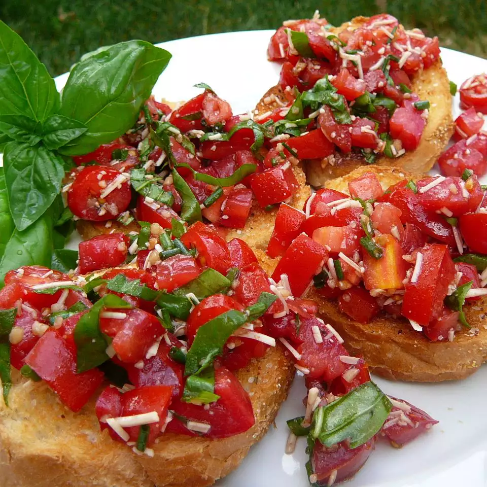

Balsamic Bruschetta

Bruschetta is a classic Italian appetizer that is easy to make at home. Toasted bread is topped with tomatoes, Parmesan cheese, garlic, and fresh basil. Use a high-quality balsamic vinegar for best results.
This top-rated bruschetta recipe proves that summertime gives you perfectly ripe and juicy tomatoes, one of the best ways to enjoy them is also one of the easiest.
How Do You Make Bruschetta?
You'll find the full, step-by-step recipe below — but here are a few of our favorite tips for making the best bruschetta every time:
- Quality counts: The beauty of a simple recipe like bruschetta is that it showcases the flavor of the individual ingredients. For this recipe, you can really taste the difference when you use ripe tomatoes and fresh (not dried) basil; the best olive oil and balsamic vinegar you can afford, and hand-grated Parmesan cheese instead of pre-packaged grated cheese.
- Add flavor with garlic: As an alternative to adding minced raw garlic to the tomato mixture, cut a peeled clove of garlic in half lengthwise and lightly rub the cut side over the slightly roughened surface of the toasted bread to impart a hint of garlic flavor. Rub on a little more garlic for a stronger flavor, if you wish. But watch out: A little garlic goes a long way.
- Be patient: Make the tomato mixture and let it sit for a couple of hours so the flavors can develop more complexity. Yes, the tomatoes may give off a lot of juice as they marinate, but if you think the mixture is too juicy come serving time, simply use a slotted spoon to lift out the bruschetta topping as you spoon it over the bread. Don't toss the liquid, though — lots of people love to dip into it with extra bread. If you're going to top the bread first before serving, save that step until the last minute so the bread doesn't get soggy as it sits.
Ingredients
- 1 loaf French bread, cut into 1/4-inch slices
- 1 tablespoon extra-virgin olive oil
- 8 roma (plum) tomatoes, diced
- 1/3 cup chopped fresh basil
- 1 ounce Parmesan cheese, freshly grated
- 2 cloves garlic, minced
- 1 tablespoon good quality balsamic vinegar
- 2 teaspoons extra-virgin olive oil
- 1/4 teaspoon kosher salt
- 1/4 teaspoon freshly ground black pepper
Directions
- Gather all ingredients.
- Preheat oven to 400 degrees F (200 degrees C).
- Brush bread slices on both sides lightly with 1 tablespoon oil and place on large baking sheet. Toast bread until golden, 5 to 10 minutes, turning halfway through.
- Meanwhile, toss together tomatoes, basil, Parmesan cheese, and garlic in a bowl.
- Mix in balsamic vinegar, 2 teaspoons olive oil, kosher salt, and pepper.
- Spoon tomato mixture onto toasted bread slices.
- Serve immediately and enjoy!